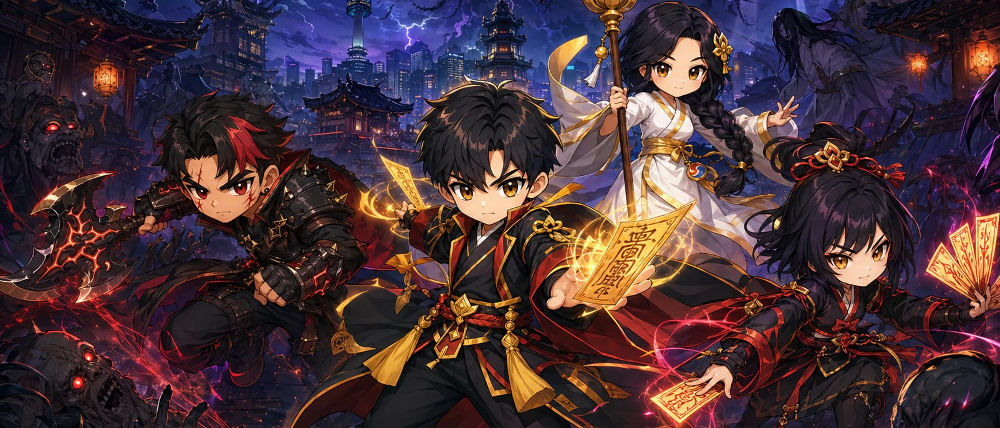

DEFEND · UPGRADE · SURVIVE
우리 동네 지키는
오늘의 퇴마 작전.
동네퇴마사는 밀려오는 귀신과 괴물을 무기로 막아 내는 세로형 타워디펜스 게임입니다. 골목길에서 시작해 지하철역, 도심, 군사기지까지 30개 임무를 돌파해 보세요.
세로 화면 · 한 손 조작 · 무료

작전 방법
배치하고, 강화하고, 직접 퇴마해요.
무기는 알아서 공격하지만, 어디에 무엇을 둘지는 내가 정해요. 위기 때는 적을 직접 눌러 거들 수도 있어요.
-
무기 배치하기
빈 슬롯을 눌러 퇴마석으로 무기를 놓아요. 임무가 진행될수록 슬롯이 최대 10개까지 열리고, 무기는 드래그로 옮길 수 있어요.
-
강화와 조합
무기를 눌러 강화하고, 이웃한 무기끼리 시너지를 노려요. 임무를 마칠 때마다 카드 3장 중 1장을 골라 판을 키워요.
-
직접 퇴마하기
적을 손가락으로 눌러 캐릭터 스킬로 공격하고, 위급할 땐 부적을 써요. 동네마다 마지막 임무에는 보스가 나타나요.
알아 두면 좋아요
가입 없이,
기록은 내 기기에
동네퇴마사는 회원가입이나 로그인 없이 바로 시작합니다. 최고 기록, 뱃지, 설정은 기기에 저장되며 따로 운영하는 서버로 보내지 않습니다. 결제할 상품은 없습니다.
토스 앱에서 즐길 때는 화면 아래에 배너 광고가 하나 있고, 도달한 임무 번호가 토스 게임센터 랭킹에 올라갑니다. Google Play 버전에는 광고와 랭킹이 없습니다. 자세한 내용은 개인정보처리방침에서 확인해 주세요.
- 분류
- 게임 · 캐주얼 액션 RPG
- 출시 채널
- Google Play · 앱인토스
개인정보처리방침 등 정책 문서는 이 페이지 아래 「문의와 정책 안내」에서 확인할 수 있습니다.
궁금할 때 먼저 보기
자주 묻는 질문
무료인가요? 광고가 나오나요?
무료이고 인앱결제는 없습니다. 게임 재화인 퇴마석은 플레이로만 얻습니다. 토스 앱 버전에는 화면 아래 배너 광고 하나가 있고, Google Play 버전에는 광고가 없습니다.
어떻게 조작하나요?
빈 슬롯을 눌러 무기를 놓고, 놓인 무기를 눌러 강화하거나 끌어서 옮깁니다. 적을 직접 누르면 캐릭터 스킬로 공격합니다. 1배속·2배속 전환과 일시정지도 할 수 있습니다.
중간에 끄면 이어서 할 수 있나요?
진행 중인 판은 저장되지 않아 다음에는 임무 1부터 다시 시작합니다. 최고 도달 기록과 뱃지, 숨겨진 무기 해금은 기기에 남습니다.
캐릭터는 어떻게 고르나요?
처음 실행할 때 퇴마사 두 명 중 한 명을 고릅니다. 메인 메뉴의 「캐릭터」 버튼에서 언제든 바꿀 수 있습니다.
숨겨진 요소가 있나요?
무기 1개만으로 임무 10을, 무기 2개만으로 임무 15를 클리어하면 숨겨진 뱃지와 무기가 열립니다. 뱃지 도감은 메뉴의 「뱃지」에서 볼 수 있습니다.
어디에서 할 수 있나요?
토스 앱 안의 앱인토스 미니게임으로 설치 없이 즐길 수 있고, Android 기기에서는 Google Play 에서 받을 수 있습니다.
도움이 필요할 때
문의와 정책 안내
앱 이용에 관한 궁금한 점이나 도움이 필요한 내용을 이메일로 보내 주세요.